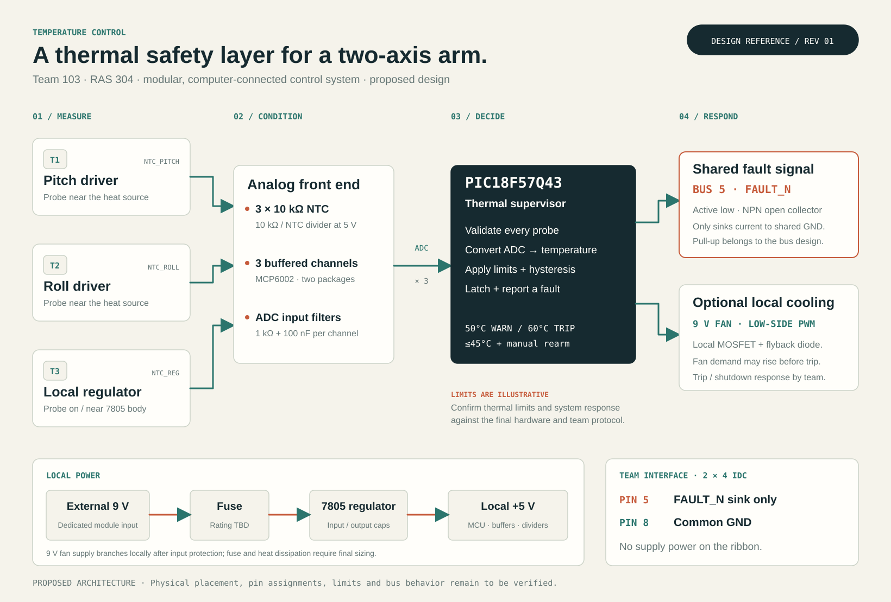

02 / SYSTEM ARCHITECTURE
Three sensing points.
One protection path.
A local temperature-control node that fits the team’s distributed motor-control architecture.
From heat to a shutdown request.


Every stage has a job.
| Stage | Proposed implementation | Purpose |
|---|---|---|
| Sense | 3 × 10 kΩ NTC probes | Monitor pitch-driver surface, roll-driver surface, and local regulator. Locations need mounting review. |
| Condition | 10 kΩ dividers, MCP6002 buffers, 1 kΩ / 100 nF filters | Produce low-impedance analog inputs while reducing electrical noise. |
| Decide | PIC18F57Q43, RA0–RA2 ADC inputs | Check validity, convert temperature, apply warning and latched-trip logic. |
| Cool | Optional local 9 V fan + MOSFET | On/off cooling at the example warning level; fan selection remains open. |
| Protect | P2N2222A open-collector sink → IDC pin 5 | Pull FAULT_N low to request the team’s coordinated motor shutdown. |
Respect the interface.
| IDC pin | Published team assignment | Temperature-board boundary |
|---|---|---|
| 1 | Pitch direction | No thermal drive |
| 2 | Pitch PWM / enable | No thermal drive |
| 3 | Roll direction | No thermal drive |
| 4 | Roll PWM / enable | No thermal drive |
| 5 | Global FAULT_N | Open-collector assertion only |
| 6 | Roll-position analog | Retain existing allocation |
| 7 | Joint-load analog | Retain existing allocation |
| 8 | Common GND | Shared signal reference |
A design needs a way to prove it.
| Need | Design response | Required verification |
|---|---|---|
| Regulated 5 V ±0.2 V | Local L7805ACV stage from 9 V | Measure rail across supply tolerance and full load. |
| Shared stop request | Bus pin 5 active low; pin 8 ground | Scope fault assertion to motor cutoff; team target <20 ms. |
| Temperature supervision | Three local analog probes | Calibrate against a reference; validate placement and response lag. |
| Independent board power | Fused 9 V input; local fan branch | Check startup, fault current and regulator temperature. |